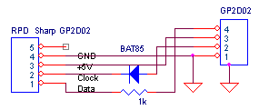
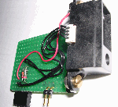
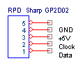
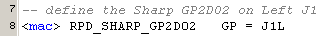
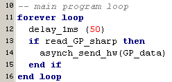
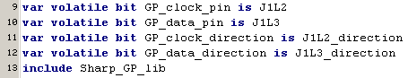

august 2005
RPD Sharp GP2D02
The Sharp GP2D02 is an optical distance sensor (now replaced by an analog version GP2D12).
It should measure distances from 20 .. 80 cm, but the device I had measured from 6 .. 60 cm.
There's one terrible annoying thing about this sensor, when it detects nothing, it outputs a value of about 30 cm.
  
Don't forget to ground the housing of the GP2D02, it's made of conductive plastic !!
JALcc macro call

JALcc use

JALcc macro expansion

BackGround Information
Technical paper AVR and robotics
Interfacing the GP2D02 to a Microchip PIC and Sweeping it with a Hobby Servo
sharp-app-note.pdf (application-pdf Object)